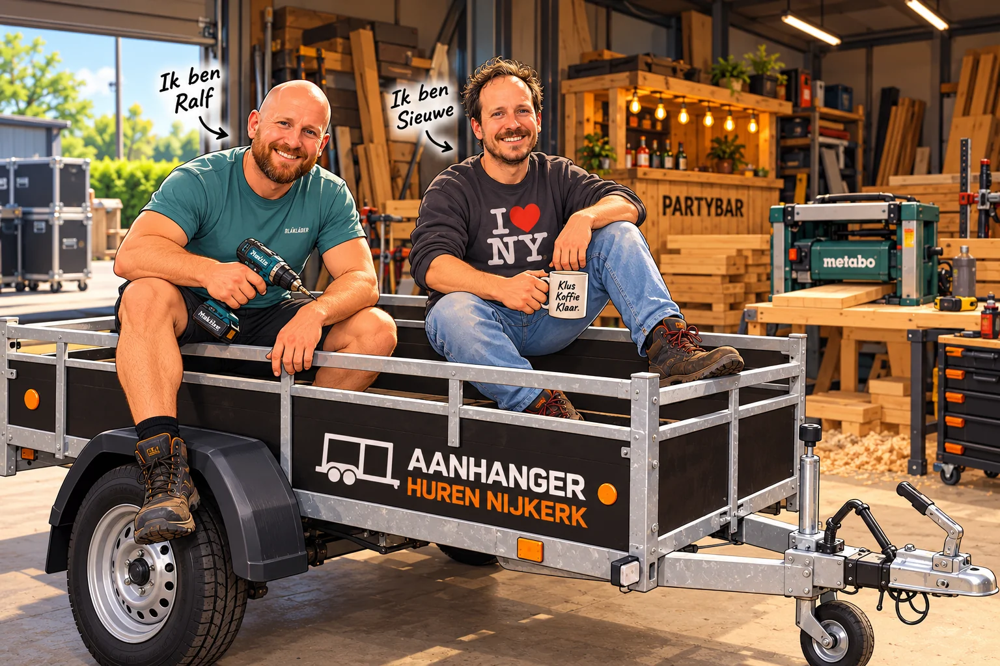

ACHTER DE AANHANGER
Wie zijn wij?
Twee buurmannen. Altijd iets aan het bouwen.
Wij zijn twee buurmannen uit Nijkerk. We bouwen houtproducten, bouwen partymateriaal en verhuren materiaal voor feesten en evenementen. Geen grote praatjes, maar gewoon aanpakken, bouwen en zorgen dat het goed geregeld is.
Voor onze eigen klussen hebben we een stevige aanhanger aangeschaft. Alleen staat deze vaak stil. Zonde, vonden wij. Dus stellen we hem ook beschikbaar voor anderen die wat te vervoeren hebben.
Een verhuizing, bouwmateriaal ophalen of een flinke klus? Huur onze aanhanger voor een scherpe prijs, met duidelijk contact en zonder gedoe. Goed geregeld, zodat jij verder kunt met je klus.
Bekijk beschikbaarheid →